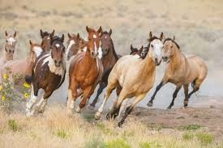

<html>
<body style="background-color:beige;">
</body>
</html>
<!DOCTYPE html>
<html lang="en">
  <head>
    <meta charset="utf-8">
    <title>Ashley Quezada</title>
    <meta name="description" content="Your Webpage Description">
    <meta name="author" content="Ashley Quezada">

    <!-- Enable responsive viewport -->
    <meta name="viewport" content="width=device-width, initial-scale=1.0">

    <!-- Le HTML5 shim, for IE6-8 support of HTML elements -->
    <!--[if lt IE 9]>
      <script src="http://html5shim.googlecode.com/svn/trunk/html5.js"></script>
    <![endif]-->
    <link href="https://kbroman.org/simple_site/assets/themes/twitter/bootstrap/css/bootstrap.2.2.2.min.css" rel="stylesheet">
    <link href="https://kbroman.org/simple_site/assets/themes/twitter/css/style.css?body=1" rel="stylesheet" type="text/css" media="all">
    <link href="https://kbroman.org/simple_site/assets/themes/twitter/css/kbroman.css" rel="stylesheet" type="text/css" media="all">
    <!-- Le styles -->
    <!-- For now, feel free to just keep this as is. These are stylesheets that set up things like the font -->

   

    <!-- Le fav and touch icons -->

    <!-- atom & rss feed -->
    <link href="https://kbroman.org/simple_sitenil" type="application/atom+xml" rel="alternate" title="Sitewide ATOM Feed">
    <link href="https://kbroman.org/simple_sitenil" type="application/rss+xml" rel="alternate" title="Sitewide RSS Feed">

  </head>

  <body>
    <div class="navbar">
      <div class="navbar-inner">
        <div class="container-narrow">
          <a class="brand" href="https://ashleyquezada.github.io/">Ashley Quezada</a>
        </div>
      </div>
    </div>

    <div class="container-narrow">

      <div class="content">
        

<div class="page-header">
  <font color="turquoise"> <h2>Ashley Quezada</font></h2>
</div>

<div class="row-fluid">
  <div class="span12">
    <p> Hello! My name is Ashley Quezada, im currently a 9th grader at <a class="brand" href="https://www.dsstpublicschools.org/college-view-high-school">DSST College View High School</a>. I am 14 years old and was born and rased in Denver, Colorado. I have two younger sisters, their names are; Ayalett and Allison. My favorite subject in school is math and composition, mostly because I always get good grades in these classes. My favorite type of food is tacos de carne al pastor and ceviche. I like to play baseball and go horse back riding. </p>
  
      
            
   
    <p>  
   </p>
<div class="page-header">
  <font color="lightblue"> <h2>My Projects  </font></h2>
</div>

<p> Extra informatin about myslef.</p>

<ul>
  <li><a herf="aboutme.html"> More about me </a></li>
  <li><a herf="myfamily.html"> My Family </a></li>
 


  </div>
</div>
<div class="page-header">
  <font color="aquamarine"> <h2>My Resume  </font></h2>
</div>

<p>Check out all my cool <a href="Teaching_Resume_Wood.pdf">qualifications</a>.</p>

      </div>
      <hr>
      <footer>
        <p><small>
          <a href="https://creativecommons.org/publicdomain/zero/1.0/"></a> &nbsp;
        </small></p>
      </footer>

    </div>

    
  </body>
</html>

